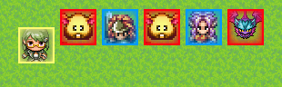
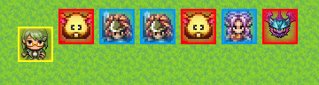
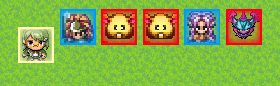
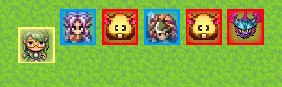

The add-on LeTBS_TimelineControl allows you to use some effects to alter the battle flow.
Effects
Extra Turn
Battlers can get extra turn right after they play. The tag extra_turn: x% can be used on battlers, states and equipment to define the odd to get an extra turn when they end their turn.
When the tag is used on skills, they have a chance to give right away an extra turn to the target. Their presence in the timeline will be cloned.
- Before:
 - After Lucius used his skill to add an extra turn to Duran:

Turn Acceleration & Deceleration
It's possible to make a battler play his turn sooner, or later with accelerate_turn: x% and decelerate_turn: x%. They have to be used on skills, and x determines the odd to apply the change.
When a turn is accelerated, the battler's presence in the timeline take a step forward, and a step backward when the turn is decelerated.
- Before:
- After Lucius used his skill to accelerate Duran's turn:

Instant Turn
The instant turn effect moves the target's presence in the timeline to make him play just after the caster. Skills can apply it with the tag instant_turn: x%, where x is the odd to apply the effect.
- Before:
- After Lucius used his skill to make Angela's turn instant:

The tag extra_instant_turn: x% has a similar effect, but instead of moving the battler on the timeline, the effect clones him.
Charged Skills
Charged skills are skills that require a certain amount of turn to be fully executed. To apply this effect, use the tag charge: turns, animation_id where turns is the amount of required turns, and animation_id the id of the animation that will be played during the charge.
When a battler is charging a skill, the pose charge is used.
Interruption
When a battler is charging a skill, he can be interrupted by others' attack. The default % of interrupting a charged skill is defined by the plugin parameter Interrupt Chance. To alter the odd of interrupting a skill, use the tag interrupt_charge: +x% or interrupt_charge: -x% on battlers, states and equipment.
Casters can defend themself against interruption with the tag interrupt_charge_defense: +x%.
Limits
The way the timeline is designed right now imposes some limits to the timeline control effects. For instance, accelerating or decelerating the turn of a battler who already played his turn has no effect at all, obviously since the timeline is unidirectional: at the end of the turn order, all effects are dissipated and turn turn order is restaured.
[I have to add a pending effect in such case, to trigger acc/dec effects at the end of the turn order, on targets who already played their turn.]